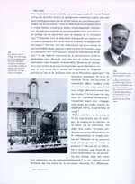
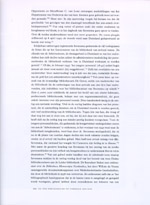
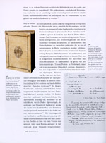

Een zwarte bladzijde uit de geschiedenis van de UB Leiden
Tentoonstelling in de Universiteitsbibliotheek te Leiden,
van 15
april tot 31 december 2003.
Samenstelling: Jos Damen
|
1. |
Rijksuniversiteit Leiden 1940-1945 | |
|
2. |
Universiteitsbibliotheek Leiden 1940-1945 | |
|
3. |
Elsa Molhuysen-Oppenheim (Groningen 1885 - Leiden 1941) | |
|
4. |
Caroline van Loen (Amsterdam 1886 - Auschwitz 1944) |
UNIVERSITEITSBIBLIOTHEEK LEIDEN 1940-1945
De Leidse universiteitsbibliotheek is tijdens de oorlog, ondanks de
sluiting van de Leidse universiteit, gewoon geopend gebleven als
wetenschappelijke voorziening, net als practica en co-schappen in Leiden
tijdens de oorlog gecontinueerd werden.
-In oktober 1940 werd het uitlenen van boeken van joodse, marxistische en
andere schrijvers (Freud, Zweig, de complete familie Mann, Einstein) door
de Duitsers verboden "tenzij voor wetenschappelijke doeleinden"
(sic). Het is onduidelijk of aan dit bevel gehoor is gegeven.
-De collectie Duitse (juridische) literatuur werd tijdens de oorlogsjaren
sterk uitgebreid.
-De twee joodse personeelsleden van de Universiteitsbibliotheek werden op
23 november 1940 direct ontslagen. Elsa R. Molhuysen-Oppenheim en Caroline
van Loen overleefden de oorlog niet. Ter herinnering aan hun dood is op 26
november 2003 een herdenkingssteen in de Leidse bibliotheek onthuld.
|  | Magna commoditas : geschiedenis van de Leidse universiteitsbibliotheek 1575-2000 / Christiane Berkvens-Stevelinck. Leiden, 2001. (UBL 8733 B 13) | |
|  |  | |
| vorige pagina | volgende pagina |